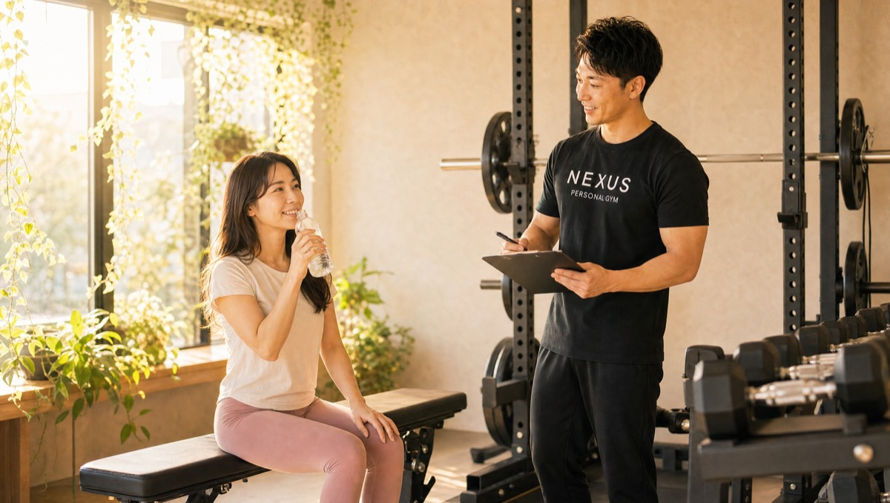
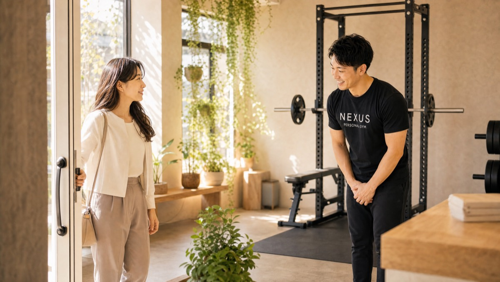

NEXUS Personal Gym ／ 東京都練馬区
NEXUSパーソナルジム 新江古田店｜大げさな目標より、現実的な一歩の完全個室ジム

都営大江戸線・新江古田駅からすぐ。西武池袋線・江古田駅や桜台エリアからもアクセスできる、完全個室パーソナルジムです。新江古田店が掲げるのは、「大げさな目標より、現実的な一歩」。「1ヶ月で-10kg」のような誇大なビフォーアフターは約束しません。その代わり、初回カウンセリングであなたの生活と体力に合った、無理なく守れる現実的なゴールを提案します。守れる提案だからこそ続き、続くからこそ現実に変わる——その誠実さが、新江古田店の指導の芯です。会員からは「初回に無理のない現実的な目標とアプローチを提案された」「提案通りに続けたら1ヶ月半で体脂肪が減り始めた」という声をいただいています。さらに、機材も空間も隅々まで磨かれた清潔さも大きな魅力。完全個室で人目を気にせず、女性や初心者の方も集中できます。ウェア・タオル・ドリンク・プロテインまで全部込みの手ぶら通いOK。毎日8:00〜23:00・LINE予約で、現実的な一歩を、着実に積み重ねられます。
- 完全個室
- 新江古田駅すぐ
- 現実的な目標設定
- 徹底した清潔さ
- ★4.9（89件）
- 毎日8:00〜23:00
この店舗の特徴
NEXUS新江古田店は、都営大江戸線・新江古田駅からすぐの完全個室パーソナルジム。江古田・桜台エリアからも通いやすい立地です。この店舗いちばんの個性は、「大げさな目標より、現実的な一歩」という誠実な姿勢。パーソナルジムというと、劇的なビフォーアフターや非現実的な数字を掲げるイメージを持つ方もいますが、新江古田店が目指すのは真逆です。初回カウンセリングで、あなたの生活・体力・目標に本当に合った、無理なく守れる現実的なプランを提案。「守れる提案を、守れば、現実に変わる」——このシンプルで誠実な考え方を徹底しています。だからこそ、途中で挫折せず、体脂肪という確かな変化として結果が表れます。もうひとつの大きな特徴が、徹底した清潔さ。機材も空間も常に手入れが行き届いており、口コミでもその清潔感を絶賛する声が多数寄せられています。完全個室で人目を気にせず、時間通りに始まる予約制なので、女性や初心者の方も安心して集中できます。ウェア・タオル・ドリンク・プロテインまでアメニティ完備の手ぶら通い。予約はLINEでサッと完結します。
初回に約束するのは、現実的なゴール
ダイエットやボディメイクが続かない理由の多くは、最初に掲げた目標が非現実的だからです。「1ヶ月で-10kg」のような無茶な目標は、達成できずに自己嫌悪に陥り、挫折につながります。新江古田店が初回カウンセリングで約束するのは、その真逆——あなたの生活リズム、体力、これまでの運動経験をていねいに伺った上で、無理なく守れる現実的なゴールとアプローチです。会員からは「初回カウンセリングで、無理のない現実的な目標とアプローチを提案された」という声をいただいています。派手な数字で気を引くのではなく、あなたが本当に続けられるプランを一緒に設計する。だからこそ、提案は「守れる」ものになり、守れるからこそ結果が出ます。トレーナーは、あなたの頑張りすぎも見逃しません。無理をして一時的に頑張るのではなく、日常に自然と組み込める範囲で続けることを大切にします。現実的なゴールは、地味に見えるかもしれません。けれど、着実に達成できる目標を一つずつクリアしていく体験こそが、自信と習慣を育てます。誇大な約束ではなく、誠実な提案を。それが新江古田店のスタートラインです。
初回カウンセリングで提案された目標が現実的で、これなら続けられると信頼できました。実際にその通り続けたら、1ヶ月半で体脂肪が減り始めて驚いています。
1ヶ月半で、体脂肪が動き出す

現実的な目標には、大きな利点があります。それは「守れるから、続く」ということ。そして続くからこそ、体脂肪という確かな変化が表れ始めます。新江古田店の会員からは「提案通りに続けたら、1ヶ月半で体脂肪が減り始めた」という声をいただいています。派手な短期集中で無理やり体重を落とすのではなく、日常に組み込める現実的なトレーニングと食事を、着実に積み重ねる。すると、1ヶ月半ほどで体脂肪が動き出し、身体のラインに変化を感じられるようになります。ポイントは、体重計の数字だけを追わないこと。体脂肪や見た目のラインに目を向けることで、健康的で戻りにくい変化を実感できます。月額3,000円のAI食事指導を組み合わせれば、写真を送るだけで日々の食べ方をサポート。無理な食事制限ではなく、続けられる範囲で「痩せる食べ方」を身につけるので、リバウンドしにくいのも特徴です。焦らず、現実的な一歩を積み重ねること。それが、遠回りに見えて実はいちばんの近道です。「守れる提案を守れば、現実に変わる」——その手応えを、新江古田店で体感してください。
隅々まで磨かれた個室

トレーニングに集中するために、実は「清潔さ」は欠かせない要素です。汗を扱う場所だからこそ、空間や機材の清潔感は、通いやすさや安心感に直結します。新江古田店は、その清潔さを口コミで絶賛される店舗。会員からは「機材も空間も常に手入れされていて、女性や初心者も集中できる」「とにかく清潔で気持ちがいい」という声を多くいただいています。使用後の機材はもちろん、床や壁、細かな備品まで、隅々まで手入れが行き届いた状態を保っています。完全個室なので、他の利用者と空間を共有することもなく、人目を気にせず自分のトレーニングだけに集中できます。時間通りに始まる予約制も、心地よさのひとつ。待たされることなく、決まった時間に自分だけの空間でスタートできるので、忙しい方でもストレスなく通えます。清潔で落ち着いた環境は、特に「ジムの雰囲気が不安」という女性や初心者の方にこそ安心していただけるポイントです。気持ちのいい空間で、現実的な一歩を積み重ねる——新江古田店なら、その両方が叶います。
とにかく清潔で気持ちがいいです。完全個室なので人目を気にせず集中でき、時間通りに始まる予約制も心地よくて、毎回快適に通えています。
大江戸線・新江古田駅すぐ。江古田・桜台からも
NEXUS新江古田店は、都営大江戸線・新江古田駅からすぐの通いやすい立地です。西武池袋線・江古田駅や、桜台エリアからも歩いてアクセスでき、練馬・中野方面の幅広いエリアの方にご利用いただけます。駅からの動線がわかりやすく、初めての方でも迷わずお越しいただけます。仕事帰りや買い物のついでにサッと立ち寄れる駅近立地なので、忙しい方でも生活の中に無理なく組み込めます。ウェア・水・タオル・プロテインまですべてアメニティとしてご用意しているので、持ち物は通勤バッグひとつ、手ぶらのまま通えます。毎日8:00〜23:00の営業なので、朝の出勤前でも、残業帰りの夜でも、自分の生活リズムに合わせて通えます。予約・変更はLINEで完結し、6時間前まで無料でキャンセルできるので、急な予定変更にも対応しやすい設計です。新江古田・江古田・桜台エリアで「現実的に、着実に変われる清潔なジム」をお探しの方は、ぜひ一度お越しください。近隣には、再挑戦を後押しする練馬店や、静かな環境が魅力の沼袋店もあります。
まずは無料体験から

「大げさな目標を掲げられて、続けられなかった」「初めてのパーソナルで緊張する」——そんな方こそ、まずは無料体験からお試しください。新江古田店の無料体験は、カウンセリングであなたの目標や不安、生活リズムをじっくり伺うところから始まります。その上で、無理なく守れる現実的なゴールとアプローチをご提案。姿勢や身体のクセをチェックし、実際にトレーニングを体験していただきます。フォームを丁寧に確認しながら進めるので、初めての方でも安心して身体を動かせます。清潔に手入れされた完全個室で、時間通りに始まる心地よさも、その場で感じていただけるはずです。体験も手ぶらでOK。ウェア・タオル・ドリンクもすべてご用意しているので、仕事や買い物の合間に、そのままお立ち寄りいただけます。新江古田駅からすぐなので、アクセスも簡単です。無理な勧誘は一切ありません。まずは新江古田店で、「守れる提案を守れば、現実に変わる」という誠実な指導を、気軽に体感してみてください。
料金プラン
入会金は通常55,000円、無料体験当日入会で15,000円（税込）に割引。AI食事指導は月額3,000円（税込）。全店舗共通の料金です。
アクセス
- 店舗名
- NEXUSパーソナルジム 新江古田店
- 住所
- 〒176-0012
東京都練馬区豊玉北1-1-5 エルパティオ102号 - 最寄り駅
- 都営大江戸線 新江古田駅 すぐ（江古田・桜台からもアクセス可）
- 営業時間
- 毎日 8:00〜23:00
- 電話番号
- 050-1790-8493
Googleマップの口コミ
出典：Google マップ
NEXUS新江古田店はGoogle口コミ★4.9・89件。現実的な目標設定から確実に変わる指導と、徹底された清潔さが評価されています。「初回の提案が現実的で信頼でき、その通り1ヶ月半で体脂肪が減り始めた」という声や、「とにかく清潔で、完全個室で人目を気にせず集中できる」という声が多く、誠実な指導と快適な空間の両立が支持されています。
普段は別の店舗に通っていますが、仕事の都合で新江古田店を利用しました。押し付けず、その日の体調に合わせてくれるスタイルは同じで安心できました。清潔で快適だったのも印象的です。
新江古田店のよくある質問
Q新江古田・江古田エリアにパーソナルジムはありますか？+
Qどれくらいの期間で変化が出ますか？+
Q練馬店・沼袋店との違いは？+
よくある質問（全店共通）
料金・制度などNEXUS全店に共通するご質問です。さらに詳しくは110問のFAQをご覧ください。
Q料金はいくらですか？+
Q手ぶらで通えますか？+
Qキャンセルはいつまでできますか？+
Q食事指導はありますか？+
Qトレーナーはどんな人ですか？+
Q女性会員は多いですか？+
Q体験の流れは？+
NEXUSパーソナルジムの特徴・料金をもっと見る